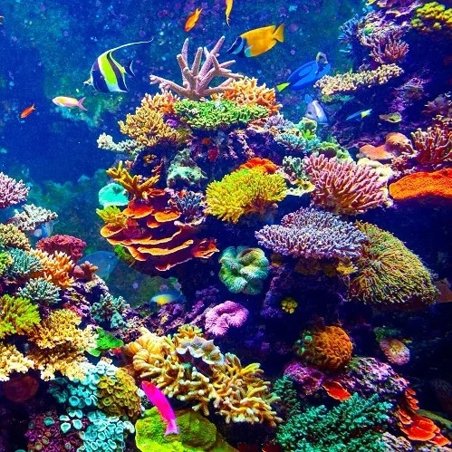
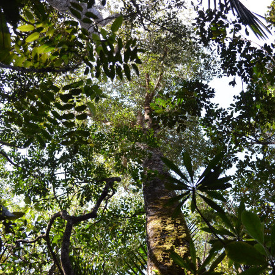
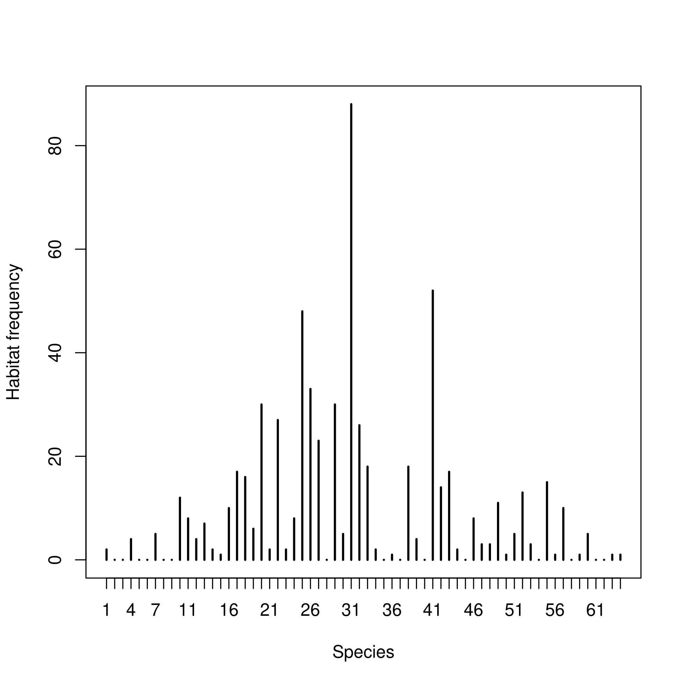
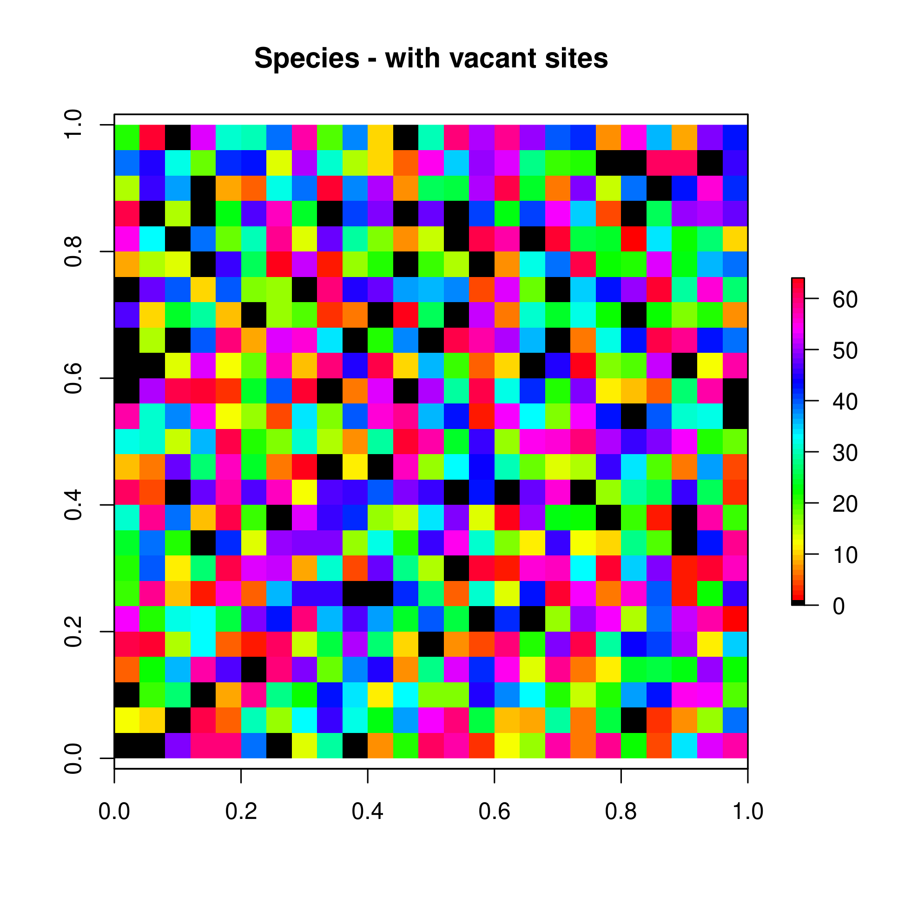
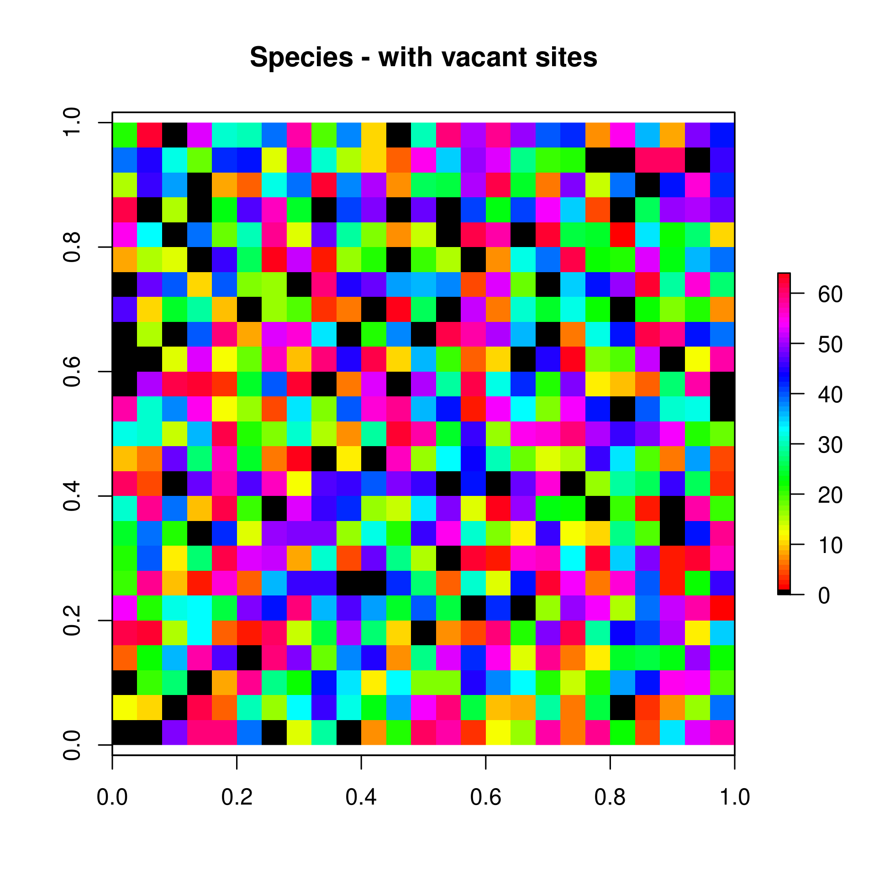
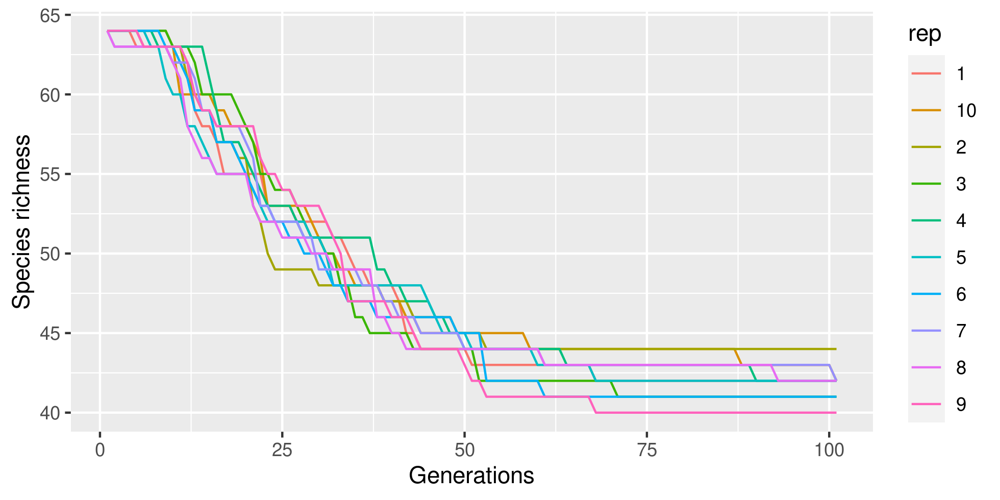
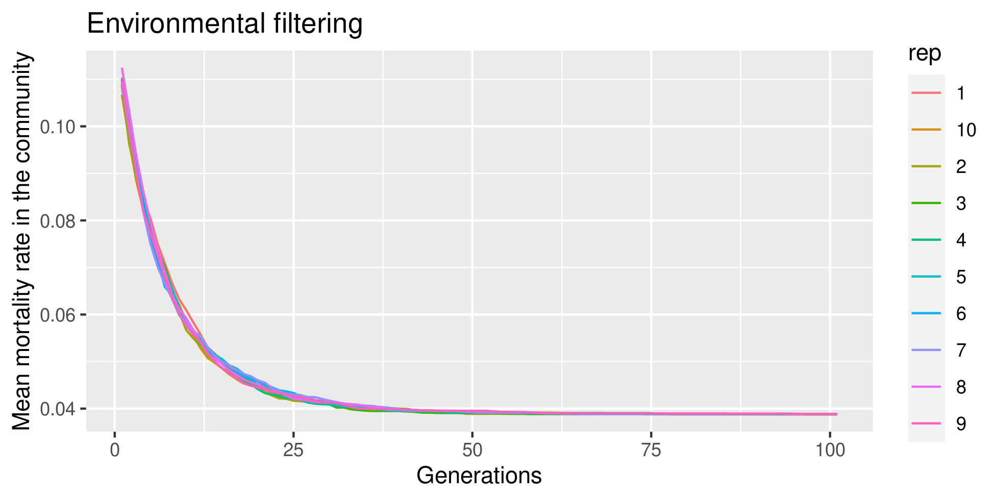

Theoretical model of species coexistence in high dimension
Has intraspecific variability anything to do with species coexistence?
Ghislain VIEILLEDENT, Isabelle MARECHAUX, Camille GIRARD-TERCIEUX
Intro
Coexistence is everywhere (coral reefs, tropical forests, grasslands, gut microbiota, etc.) and should be simple to obtain.




Coexistence is supposed to be stable in these communities (Tilman 1982; Clark & McLachnan 2003).
Previous theoretical studies have shown that the stable coexistence of a high number of species can be obtained either:
- In heterogeneous environments
- In homogeneous environments, given appropriate trade-offs in species demographic traits (Tilman 1994). The problem is that such low-dimensional demographic trade-offs have been rarely observed in real communities.
Here, we propose a simple theoretical model of community dynamics to show that:
- Stable coexistence is easy to obtain in an heterogeneous environment, assuming each species is the best competitor in a given environment.
- Large intraspecific variability can emerge from (i) environmental variability and (ii) unobserved environmental factors.
Main difference with Adam’s model: IV is not explicitly included in the model.
Model
Environment
We consider \(n_s=w \times h\) sites on a regular grid. Each site \(i\) is characterized by a multidimensional environment defined by \(n_v\) environmental variables \(x_1, \ldots, x_{n_v}\) (\(n_v=3\) in our example). Each environmental variable is spatially auto-correlated and derived from an intrinsic conditional autoregressive model (iCAR). Environment variables have values in \([0, 1]\). Environment on a particular site can be defined with a RGB colour. Similar sites (in terms of environment) have similar RGB colours. Environment is not uniformly distributed: some environments are more frequent than others.


Species
We consider \(n_{Sp}\) species indexed on \(j\) (\(n_{Sp}=64\) in our example). Species niche is multidimensional. Species performance is optimal at one point in the multidimensional environmental space. Species performance on each site \(p_{ij}\) is computed from the Euclidean distance \(d_{ij}\) between the optimal point for species \(j\) and the environment on each site \(i\), in the multidimensional environmental space: \(p_{ij}=-d'_{ij}\), where \(d'_{ij}\) is the normalized distance (\(d'_{ij}\)=\((d_{ij}-\mu_d)/\sigma_d\)). This means that one species will outcompete all the other species in one particular environment. Similar species have similar colours.

The number of sites where each species has a higher performance is variable between species. For some species, there is no sites where they would be the most competitive.

Dynamics
Initial conditions
Each site is occupied by one individual of one species. Species are drawn at random on each site.

Mortality
The mortality rate for each individual is a function of the species performance on each site. \(\alpha\) is the mean mortality rate and \(b\) is the effect of the species performance on the mortality. In our example, we use \(\alpha=0.1\) and \(b=-0.5\). Mortality leads to vacant sites for which species will compete.
\[\theta_{ij}=\text{logit}^{-1}(\text{logit}(\alpha) + b \times p_{ij})\]
 

Recruitment
There is no recruitment limitation (as in Hurtt & Pacala (1995)) in our model. We assume that each species which is still present in the community has the ability to send a propagule on each vacant site. The species with the highest performance on each site outcompetes the other species and occupies the site.
Simulations
- Number of generations: \(g=100\).
- Number of repetitions with changing initial conditions: \(r=10\).
Result
Species coexistence
Species without suitable environment are excluded from the community. Stable coexistence of the other species.

The mean species rank (over repetitions) at the end of the simulations is correlated to the frequency of suitable habitat for the species.

Environmental filtering
Species end up occupying the sites where they have the highest performance. Community is structured in space and follows the spatial structure of the environment.


There is a decrease of the mean mortality rate with time associated to an increase of the mean species performance over all sites.

Intraspecific variability
Niche shape
Intraspecific variability emerges from the environmental variation in space: individuals perform differently depending on the environment. For example, we can plot the relationship between species performance and the first environmental variable \(x_1\), and fit a polynomial model \(p_{ij}=\beta_{0,j}+\beta_{1,j} x_{1,i}+\beta_{2,j} x_{1,i}^2 + \varepsilon_{ij}\), \(\varepsilon_{ij} \sim Normal(0, V_j)\). We obtain the classical relationships: bell shape, increasing, or decreasing relationship, depending on the position of the species on the environmental axis. Note: this relationship (showing intraspecific variability) can also be observed if the environment is unidimensional.

Individual variability
Intraspecific variability \(V_j\) emerges from environmental variables \(x_2\) and \(x_3\) (not considered in the above model). This variability can be structured at the individual scale (“individual variability”) when one individual is repeatedly observed at one site.

Discussion
Species coexistence and IV
- Two conditions for stable coexistence of species:
- Variable environmental conditions
- Each species outperforms the others in a given particular environment
- IV emerges from (i) environmental variability, (ii) unobserved environmental axis
- IV is the result of a variable and multidimensional environment, and is not a mechanism determining species coexistence
Limitations, thoughts, and perspectives
Competition for resources
- No competition mechanism per se in the model. We cannot define an intra- or inter-specific competition. Is it a problem?
- Resources are not explicit in the model.
- Coexistence might be too focused on competition for resources (cf. Lotka-Volterra)?
- With such a model, it seems that “competition” between species is important to explain species coexistence (species hierarchy in a given environment), but not the “competition for resources”. For example, some species might have a high performance in low-resource environment (eg. shade tolerant species).
- A species is not limited because of high intra-specific competition, but because it cannot dominate in all types of environment (environmental filtering).
Random thoughts
- No limiting similarity in our model.
- “Each species outperforms the others in a given particular environment”: how does it translate exactly in real ecosystems? In terms of growth, mortality, fecundity?
- Add recruitment limitation (no recruitment limitation = strong hypothesis).